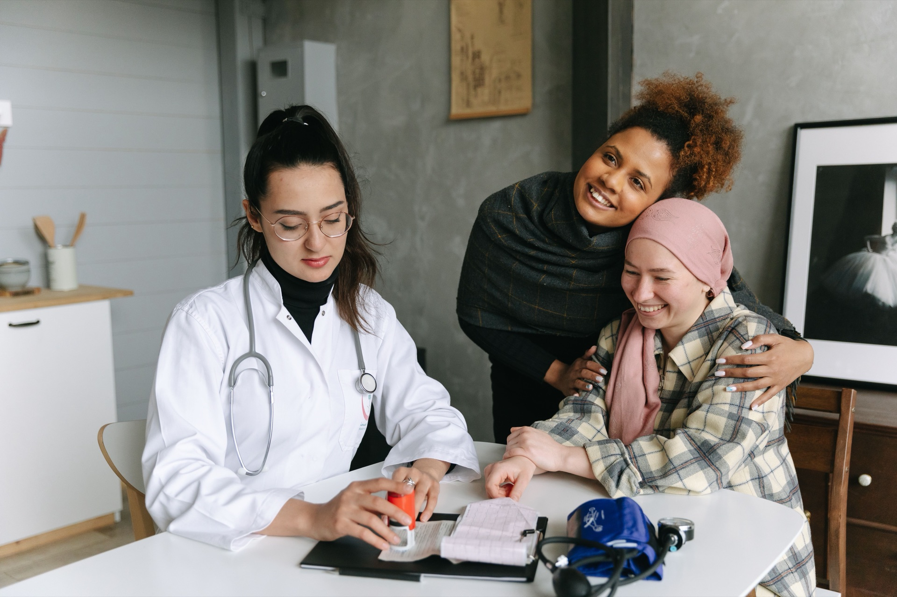
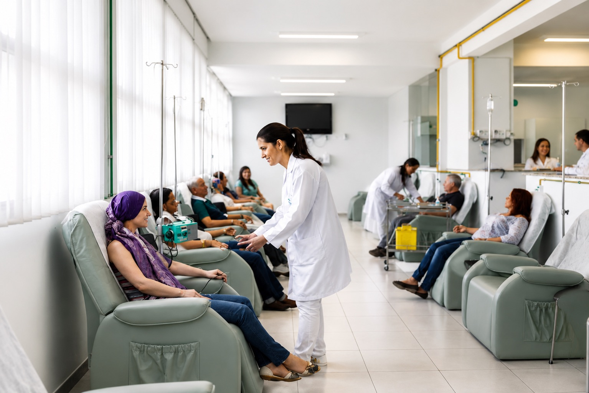

Consulta com oncologista
Avaliação do histórico, dos exames disponíveis e das necessidades atuais para orientar a condução do atendimento.

Oncologia clínica em Goiânia • Particular e convênios
Na Honcord, você encontra atendimento especializado, equipe multidisciplinar e suporte total da primeira consulta ao acompanhamento contínuo.
Nossa equipe confirma a disponibilidade de agenda, os documentos necessários e a cobertura do seu convênio.
A cobertura pode variar conforme o plano, o procedimento e a necessidade de autorização. Fale com nossa equipe para verificar as condições do seu convênio.
Como podemos ajudar
O cuidado oncológico envolve decisões importantes. Nosso papel é reunir avaliação especializada, informações claras e acompanhamento para que o paciente e sua família não precisem enfrentar cada etapa sem orientação.
Avaliação do histórico, dos exames disponíveis e das necessidades atuais para orientar a condução do atendimento.
Uma nova avaliação pode ajudar a esclarecer o diagnóstico, revisar possibilidades e trazer mais segurança para a tomada de decisão.
A equipe organiza as informações clínicas e orienta o paciente sobre exames, tratamento, acompanhamento e necessidades complementares.
O cuidado não termina em uma consulta. A Honcord acompanha a evolução do paciente e mantém a comunicação entre as diferentes etapas.
Cuidado integrado
Oncologia, exames de diagnóstico, equipe multidisciplinar e acompanhamento trabalham de forma integrada para reduzir desencontros de informação e tornar a jornada mais organizada.
Avaliação, definição da conduta e acompanhamento do tratamento oncológico.
Suporte diagnóstico integrado ao acompanhamento clínico. Consulte abaixo os exames e procedimentos realizados na Honcord.
Participação de diferentes profissionais conforme a necessidade de cada paciente.
Continuidade do cuidado após procedimentos e etapas do tratamento.
A indicação e a disponibilidade dependem da avaliação profissional, do pedido médico e das necessidades de cada paciente.
Seu primeiro atendimento
Informe o motivo do contato, o convênio e a disponibilidade de horário.
Nossa equipe orienta quais documentos, pedidos e exames devem ser levados para a consulta.
O oncologista analisa o histórico e orienta os próximos passos de acordo com o caso.
Quando indicado, o cuidado continua com apoio da equipe e integração entre as etapas.
Por que a Honcord
Acolhimento não é uma frase institucional. Ele aparece nos processos criados para orientar, apoiar e acompanhar pacientes e familiares.
Experiência no atendimento de pessoas que enfrentam o câncer e outras condições complexas.
Atendimento gratuito para pacientes em tratamento onco-hematológico. O agendamento pode ser solicitado na recepção dos consultórios ou pela equipe de telefonia.
Uma equipe dedicada acompanha o paciente após procedimentos e orienta sobre a continuidade do cuidado.
A Honcord acompanha os processos junto aos convênios e mantém o paciente informado sobre o andamento.
A experiência dos pacientes contribui para a evolução dos processos de atendimento.
A equipe desenvolve iniciativas de acolhimento ao longo da jornada, incluindo o encerramento de ciclos de quimioterapia.
Há brinquedotecas na recepção dos consultórios e na área de convivência, além de ambulatório infantil para medicações e assistência geral. A estrutura também oferece elevador, cadeiras de rodas e rampas de acesso.
Nossa equipe monitora o processo junto ao convênio para reduzir atrasos e orientar o paciente sobre pendências documentais.
Estrutura para cuidar
A Honcord integra profissionais, estrutura clínica e processos de atendimento para tornar a jornada mais clara para pacientes e familiares.

Experiências reais
“Amo minha médica, Dra. Mayza. Excelente, nota 1000 para ela.”
“Fui muito acolhida com o carisma da secretária Kimico. A Dra. Deidimar é excelência e autoridade no que faz.”
“Os médicos, as médicas e as secretárias são excelentes! Médicos competentes e acolhedores. Funcionários também.”
“Atendimento humanizado. Nós, os pacientes, vivemos dias muito difíceis, porém nos sentimos muito amados aqui.”
“O médico é maravilhoso e as atendentes também. Dr. Fabiano.”
“Quero parabenizar toda a equipe do Honcord, em especial o Dr. Daniel de Paula, pelo excelente atendimento. Parabéns! Deus abençoe a todos.”
Fale com a equipe
Envie seus dados. Nossa equipe entrará em contato para entender a necessidade, orientar sobre documentos e verificar agenda e convênio.
Nossa equipe retorna em horário comercial. Se preferir agilizar, é só chamar no WhatsApp.
Abrir WhatsAppFAQ de oncologia
A Honcord atende pacientes particulares e por convênios. A cobertura depende do plano e do procedimento. Nossa equipe verifica as condições antes do agendamento.
Isso pode variar conforme o convênio e o tipo de atendimento. Fale com nossa equipe para confirmar o que será necessário no seu caso.
Sim. A consulta de segunda opinião permite revisar exames, diagnóstico e possibilidades de condução. Leve os documentos e resultados disponíveis.
Leve os exames recentes, laudos, relatórios médicos, lista de medicamentos e outros documentos relacionados ao acompanhamento. A equipe pode orientar previamente.
Confirme com nossa equipe, ao agendar, as orientações para a participação de um familiar na consulta.
A equipe acompanha o processo e informa sobre documentos ou pendências. A decisão final e o prazo dependem da operadora.
Não necessariamente. O primeiro passo é a avaliação médica. A definição da conduta depende do diagnóstico, dos exames e das necessidades de cada paciente.
Fale com a equipe da Honcord para verificar agenda, documentos, convênio e a melhor forma de iniciar seu atendimento.